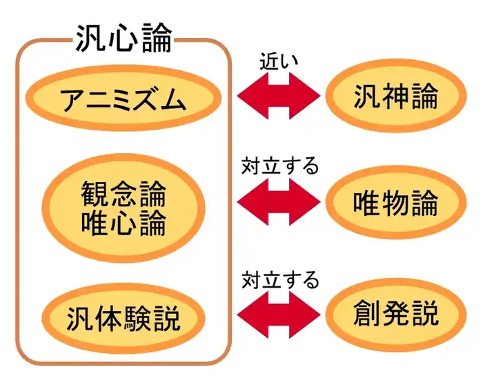
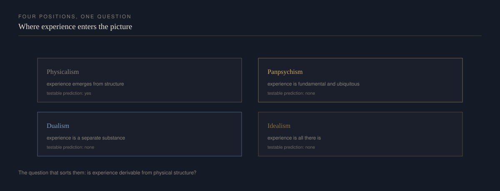

The claim
Panpsychism holds that consciousness, or something like it — proto-experience, intrinsic nature — is a fundamental and ubiquitous feature of the physical world. Complex minds are built out of simpler experiential parts, the way molecules are built out of atoms. It is not the claim that a rock is conscious in the way you are, and it is not vitalism.
Maps, diagrams and images



The modern argument is usually framed by the hard problem. Physics describes structure and relations: mass, charge, spin. It does not describe what it is like to be anything. If experience is not derivable from structure, one option is that experience was never absent — it is the intrinsic nature of the physical.
The strongest objection
The combination problem. If micro-experiences exist, how do they combine into a single unified subject? Two subjects cannot simply be added, the way two masses can. Nothing in the panpsychist toolkit explains why a hundred billion tiny experiences would produce one experience of reading this sentence.
A second objection is empirical rather than logical: panpsychism predicts nothing. There is no observation that would count for or against it, which is why it lives in philosophy departments and not in neuroscience labs.
What it is not
It is not integrated information theory, though the two are often mentioned together. IIT is a mathematical theory that makes testable claims about which systems are conscious and is a scientific hypothesis with a contested empirical record. Panpsychism is a metaphysical position about what the world is made of. Related but distinct: Russellian monism, cosmopsychism, and illusionism, which denies the hard problem outright.
Respectable, not established: panpsychism appears in the Stanford Encyclopedia of Philosophy and in mainstream academic presses. That is a statement about its standing as philosophy, not about evidence.
No test exists: nothing in the position constrains an experiment, so it cannot be labelled documented or debunked — only argued.
The honest comparison: the archive files it as live debate because the argument is unresolved, not because both sides have equal support.
Why it is in the archive
Because it is the most common philosophical idea that reaches popular writing as a scientific one. Claims that “quantum physics proves consciousness creates reality” borrow its vocabulary and none of its care, and this page exists to mark where the careful version stops.
Sources for this page
- Stanford Encyclopedia of Philosophy, “Panpsychism” — arguments and objectionsplato.stanford.edu
- Wikipedia, “Panpsychism” — history and variantsen.wikipedia.org
- Stanford Encyclopedia of Philosophy, “The Hard Problem of Consciousness”plato.stanford.edu
- Wikipedia, “Integrated information theory” — the empirical cousinen.wikipedia.org
Open resources on this topic
- BookPanpsychism — Victor Munoz · 2019 (Internet Archive, free to read)
- BookPanpsychism : the Philosophy of the Sensuous Cosmos — Ells, Peter, author · 2011 (Internet Archive, free to read)
- BookPanpsychism : past and recent selected readings — 2004 (Internet Archive, free to read)
- PapersOpen-access articles: DOAJ · PubMed Central · Internet Archive Scholar
- BooksPublic-domain and borrowable copies: Open Library · Project Gutenberg · Google Books
Cite this page
Momin, S. (2026). Panpsychism. The Larger World Archive. https://drsamonline.github.io/LARGE_GLOBE/panpsychism.htmlMomin, Sohil. “Panpsychism.” The Larger World Archive, 2026, https://drsamonline.github.io/LARGE_GLOBE/panpsychism.html.Momin, Sohil. “Panpsychism.” The Larger World Archive, 2026. https://drsamonline.github.io/LARGE_GLOBE/panpsychism.html.@misc{panpsychism2026panpsychism,
author = {Momin, Sohil},
title = {Panpsychism},
year = {2026},
howpublished = {The Larger World Archive},
url = {https://drsamonline.github.io/LARGE_GLOBE/panpsychism.html},
note = {Last reviewed 20 November 2026}
}Last reviewed 20 November 2026 · Corrections policy · this page is not peer reviewed